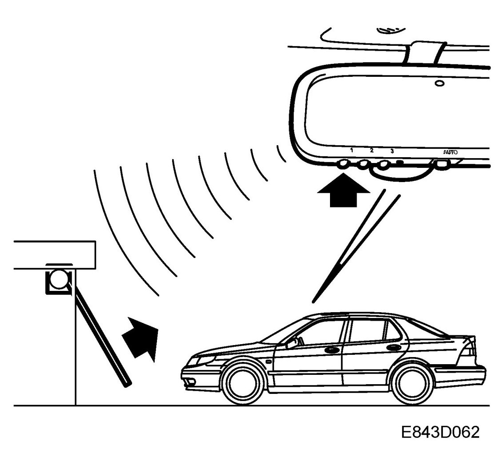
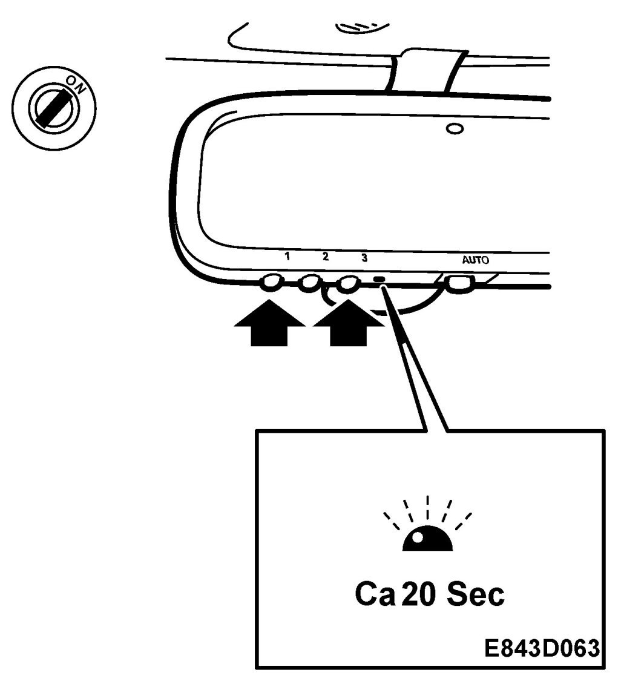
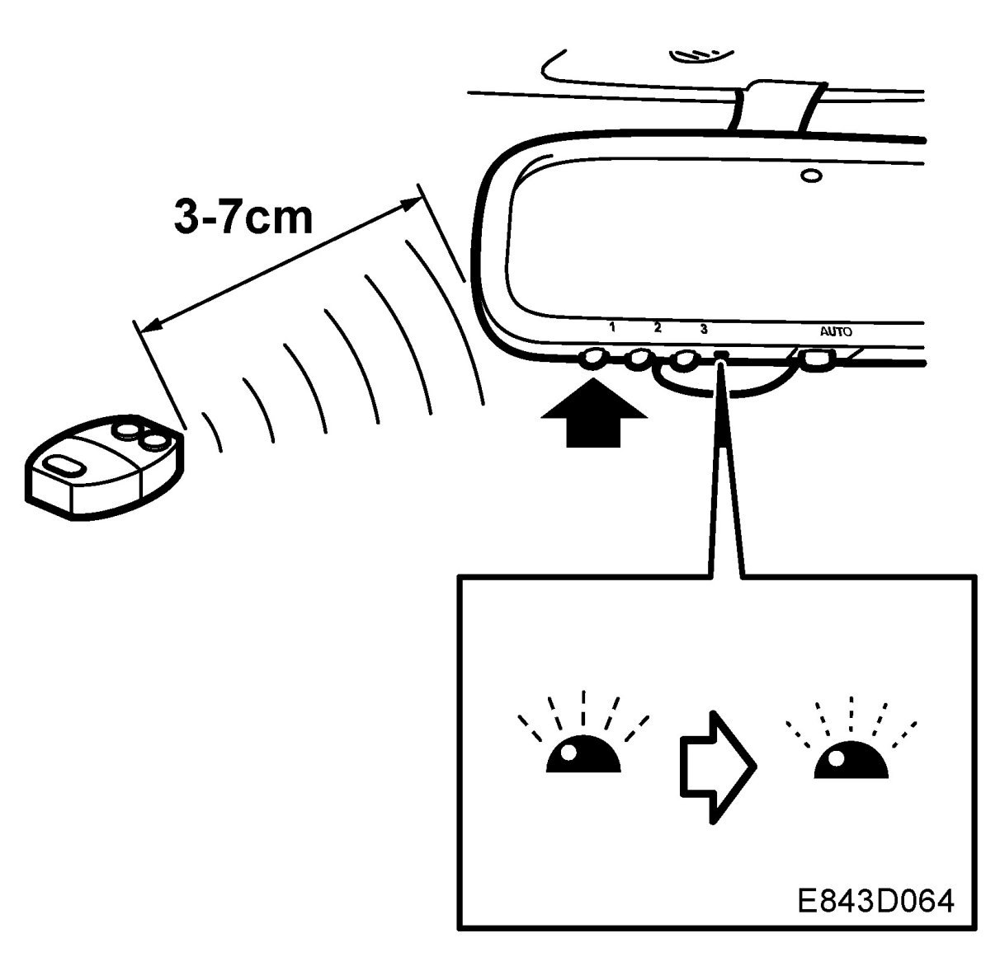
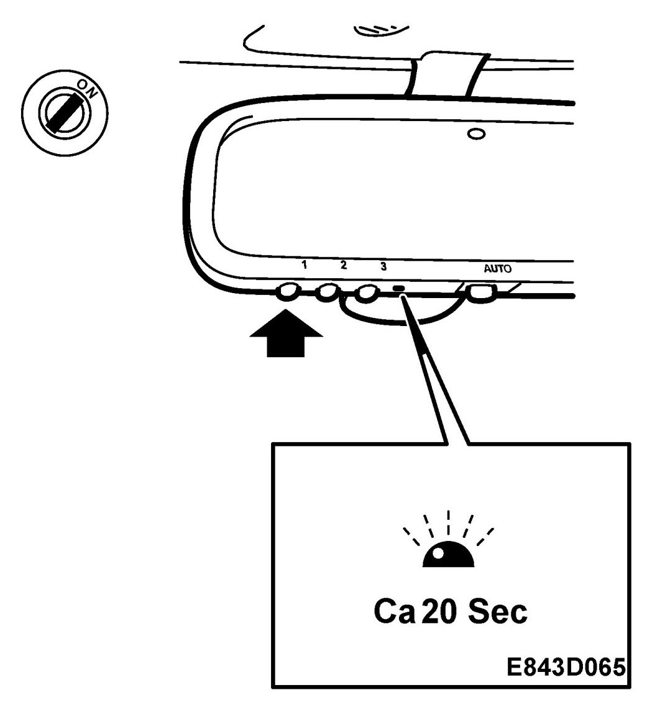
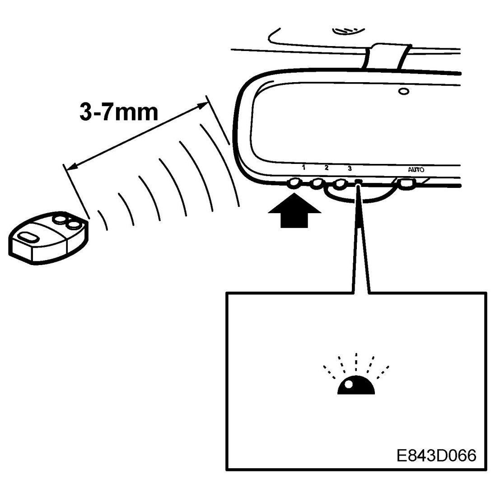
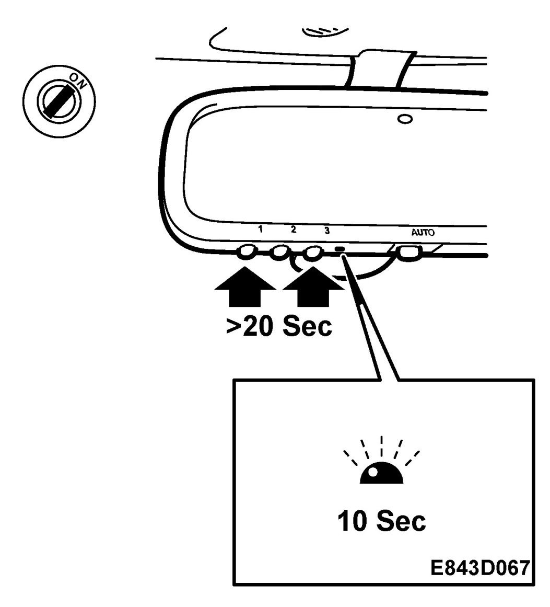
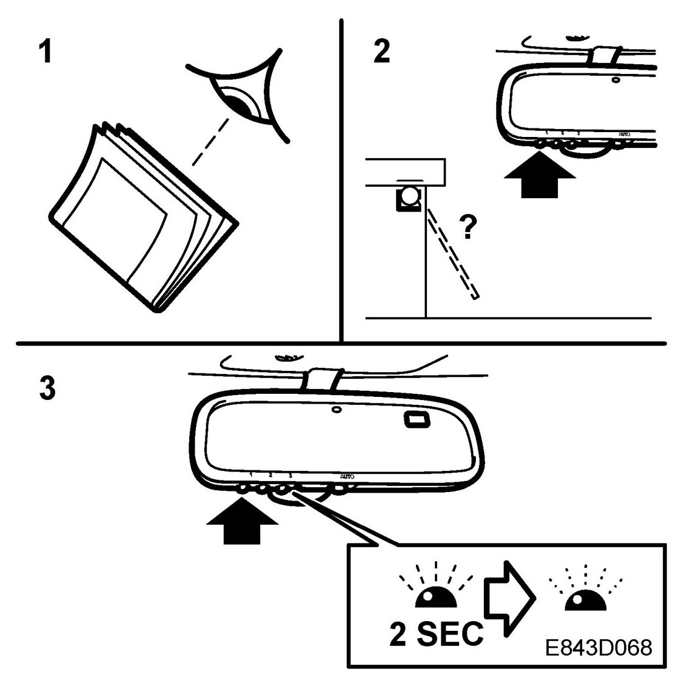
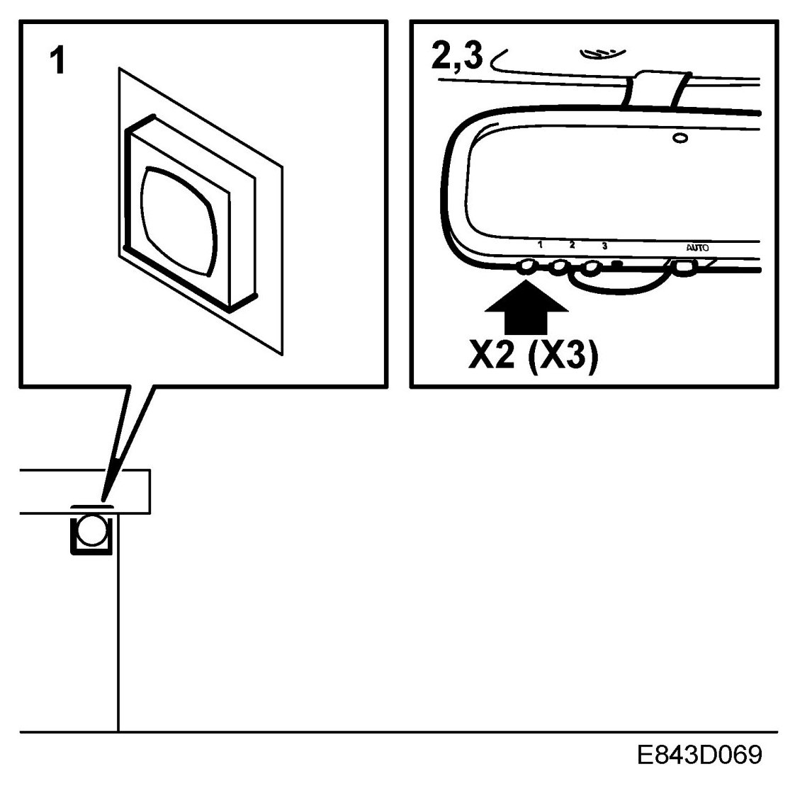

Garage Door Opener Transmitter: Testing and Inspection
Programming The Remote Control, Garage Door Opening
Preparations for first-time programming
WARNING:
- To prevent injury and damage, ensure that no persons or objects are in the vicinity of the garage doors or shutters when these are operating.
- When programming the garage door opener, the doors or shutters can be unintentionally moved.
- Do not use the garage door opening facility with a door opening mechanism which has no safety lock and reverse function in accordance with Federal safety standard requirements (this includes door opening mechanisms produced before 1st April 1982). A door opening mechanism which cannot sense an object and signal the door to stop and reverse does not comply with current Federal safety requirements. Use of a door opening mechanism which lacks these safety functions increases the risk of serious personal injury or death.
Save the original remote control for future programming. If selling the car, it is recommended to deprogram the garage opener.
Before programming the garage opener for the first time, any factory codes must be erased. The examples below describe the programming of button 1.

1. Turn the ignition ON.
2. Press and hold buttons 1 and 3 for about 20 seconds until the LED starts to flash. This will delete the factory codes and initiate the programming phase.

Programming for garage with fixed code
The garage opener can record and store the frequencies of three different remote controls.
The battery in the remote control should be fairly new for programming to work well.
1. Turn the ignition ON.
2. Hold the garage door remote control 3-7 cm below the rearview mirror. Sit where you can see the LED during programming.

3. Press the remote control button and the desired button on the rear view mirror at the same time.
4. The LED will now start to flash, slowly at first and then rapidly. The rapidly flashing LED indicates that programming is complete and that you can release the buttons.
Reprogramming a button
1. Turn the ignition ON.
2. Press and hold the desired button on the rearview mirror for the entire programming procedure.
3. The LED will start to flash slowly after 20 seconds.

4. Hold the garage door remote control 3-7 cm from the rearview mirror and press the button on the remote control.

5. Reprogramming is complete when the LED starts to flash rapidly.
The previous frequency is now erased and replaced by the new one. Reprogramming one button does not affect the other buttons.
Complete erase
IMPORTANT: On a change of owner, it is recommended that the garage opener be reprogrammed for security reasons.
1. Turn the ignition ON.
2. Press and hold buttons 1 and 3 simultaneously for 20 seconds. Confirmation is provided by the LED flashing rapidly for 10 seconds.

3. A complete erase deletes the frequencies from all three buttons. It is not possible to erase the memory of a single button.
Identifying a garage door with rolling security code
Garage doors with rolling security codes manufactured after 1996 can be identified as follows:
1. Read the garage door's instruction manual.

2. Programming the garage opener in the rearview mirror seems to be successful but the garage door does not open.
3. Press and hold the programmed button. The garage door uses a rolling security code if the LED flashes rapidly and after 2 seconds shines constantly.
Programming for garage door with rolling security code
1. Localise the programming button on the motor unit of the garage door. The location and colour of this button varies between makes.

2. Press and release the programming button on the motor unit. The next step must be performed within 30 seconds.
3. Press the programmed button on the rearview mirror twice (some garage doors require the button to be pressed three times; refer to the door's instruction manual).
Gate programming and Canada programming
The remote control may stop transmitting during programming. If so, continue to hold the button on the rearview mirror and release and press the button on the remote control every other second until programming is completed.
The LED will flash slowly at first and then rapidly. The rapidly flashing LED indicates that programming is complete and that you can release the buttons.
IMPORTANT: Turn off the switch for the garage door or gate (you can also ensure that the remote control is out of range) while programming the gate to prevent causing damage to the electric motor.
This device complies with Part 15 of the FCC Rules. Operation is subject to the following two conditions: (1) this device may not cause harmful interference, and (2) must accept any interference received, including interference that may cause undesired operation. WARNING: The transmitter has been tested and complies with the rules of FCC and Industry Canada. Changes or modifications not expressly approved by the manufacturer could void the user's authority to operate the equipment.